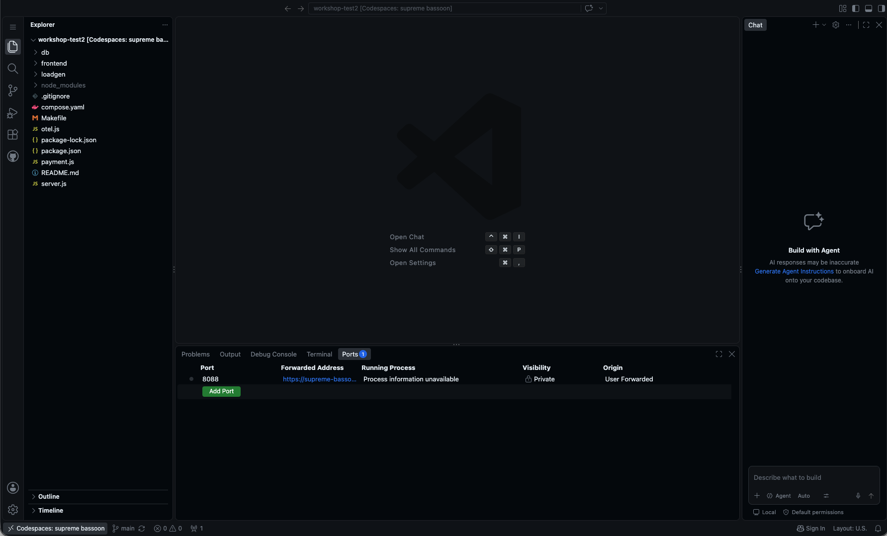
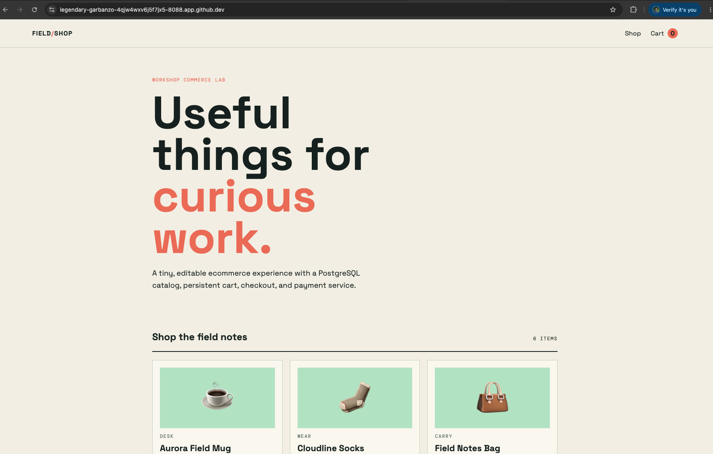

AI-Powered Dev & SRE Workflows
with Bluebox
In this workshop you'll use Bluebox — an observability agent — alongside your coding agent to investigate a real production problem on a live ecommerce app that's already running for you, and leverage those insights to code and deploy the fix. All driven by actual production telemetry rather than guesswork.
What's in this workshop
Lab 1 — Find & Fix
Generate load on a broken app, watch Bluebox investigate the root cause, create a GitHub issue from the findings, and have your coding agent write and deploy the fix — grounded in production evidence.
Lab 2 — Plan & Build
Before writing a single line, your coding agent checks production health with Bluebox, uses live telemetry to plan a new feature, then predicts what breaks at 100× traffic before the marketing campaign goes live.
What is Bluebox?
"Your coding agent plans, codes, reviews, and ships. But it can't see what happens after the merge.
Bluebox can."
Bluebox is a new offering built (with ❤️) by the AI and observability experts at Dynatrace. It's a standalone product — no Dynatrace knowledge or existing Dynatrace implementation required to get started. It continuously analyzes OpenTelemetry data from your running services, detects problems automatically, and investigates root causes so you don't have to dig through logs and dashboards yourself. When it finds something, it creates a GitHub issue with the full evidence trail attached — ready for you or your coding agent to act on. Bluebox also adds a code intelligence layer, giving your coding agent real production context so it can write new features and fixes with less prompting and fewer iterations.
Plan Before You Prompt
Briefs your coding agent with live production context before it writes a line — so it fits your system the first time, with no expensive re-prompts.
Find Issues Before They're Issues
Monitors production signals continuously. When something breaks, Bluebox investigates with full runtime context and pinpoints the root cause in your code.
Hand the Fix to Your Agent
Creates a GitHub issue with the full evidence trail attached. Your coding agent picks it up, builds the fix, and Bluebox confirms it held after deploy.
Bluebox is the missing production observability layer. It checks what your agent can't see, so you can merge with confidence.
What's already set up for you
The connections have been configured ahead of time, so you can go straight to the labs. Here's what's running in your environment:
- GitHub: a GitHub account (credentials provided at the workshop) with your own copy (fork) of the Workshop Shop repo. Bluebox files its investigation issues here.
- Bluebox: your workspace is connected to that GitHub repo. It receives OpenTelemetry data from the app and creates issues from its findings.
- Codespace: runs the Workshop Shop app, already sending telemetry to Bluebox, alongside VS Code in the browser.
- VS Code with GitHub Copilot: your coding agent, already connected to Bluebox so it can use production context when planning and fixing.
The demo app: Workshop Shop
Workshop Shop is a small ecommerce app — products, a cart, checkout, and a payment service — backed by PostgreSQL. It has intentional production problems baked in, so you'll see exactly what Bluebox detects in real workloads.
Everything runs in a GitHub Codespace. You'll be given GitHub credentials at the workshop — all you need is a browser, with nothing to install on your machine.
The app has a production problem baked in. You'll generate load to trigger it, watch Bluebox detect it, investigate it, and use your coding agent to ship a fix — all grounded in live production evidence.
Part A — Break It
First, see what the app looks like when it's healthy.
- Open the Ports panel in your Codespace.
- Click the forwarded address for port
8088to open the shop in your browser.

You should see products listed on the homepage. Add a few to the cart and click around — this is the baseline experience.

- Now open the terminal in the Codespace and run the load generator:
make load
- While it runs, refresh the shop in your browser and try to browse products. You should see the product list fail to load — the page goes blank or shows an error.
The app will recover once the load generator stops after its 60s run. This scenario is one that happens all the time — "It works on my laptop" — but the real problems only surface once production load hits the app.
If the shop recovers after the 60s run, run make load again. The problem is clearest under concurrent traffic.
- In Bluebox, click + New in the sidebar (or go to Investigations → New investigation).
- Describe what you experienced:
Users are reporting that the product catalog and cart aren't loading — the page goes blank or shows an error when there's traffic on the app. What's causing this and what's the root cause?
Let it run and review the agent reasoning in the investigation as it works. It may take a few minutes to diagnose and find the root cause of the problem.
Part B — Investigate & Create the Issue
Read through Bluebox's investigation results. Look for:
- The root cause — what is the specific failure?
- The evidence — what telemetry data supports it?
- The impact — which endpoints and how many requests are affected?
- The recommended fix — what does Bluebox suggest?
In the investigation chat, you can ask things like: "Which endpoints are most affected?" or "Show me the error rate over time" — Bluebox can answer with production data.
- Once Bluebox completes its investigation, it will automatically create a GitHub issue in your fork with the full root cause, evidence, and recommended fix attached.
- Open the issue in GitHub (either find the link in the investigation in Bluebox or just open your GitHub repo).
- Review the findings — this is what your coding agent will use as its starting point.


Part C — Fix It with Your Coding Agent
- Copy the GitHub issue URL from your fork.
- In your coding agent (Chat in Codespace), paste in your issue link and run this prompt:
Fix the issue described in this GitHub issue from Bluebox: [paste your GitHub issue URL here] Ask Bluebox for any additional production data you need to understand the scope of the problem before writing any code.
Your agent will:
- Read the GitHub issue and Bluebox investigation
- Query Bluebox for any additional context it needs
- Find the relevant code in the repository
- Implement the fix
- Push the changes as a pull request
The root cause is an intentionally undersized database connection pool in server.js. Look for databasePool — the fix involves increasing pool capacity. Your agent should find this from the Bluebox evidence.
- Review the pull request your agent created — check the code changes and confirm the fix addresses the root cause Bluebox identified.
Before running the commands below, merge the PR on GitHub. The git checkout main && git pull --ff-only origin main command will only pick up the fix once it's merged into your main branch.
- Once merged, redeploy in the Codespace:
# Pull the merged fix and restart
git checkout main && git pull --ff-only origin main
make down && make up
- Run the load generator again:
make load
- Browse the app in your browser and confirm products load normally.
- In the Bluebox UI, verify the fix by asking the below question either in the bottom of the previous investigation or in a new chat:
Is the shop API healthy now? Compare the error rate and latency before and after recent merge and app restart.
✅ Lab 1 Checkpoint
Now that we've fixed that issue, let's use Bluebox to help our coding agent plan and build a new feature. Before building something new, your coding agent checks with Bluebox: is the app healthy? What's the current behavior in production? How will a new feature affect what's already running? Then you build — grounded in reality, not assumptions.
Part B — Plan and Build a New Feature
Run the load generator again to build up fresh telemetry now that the fix is in place. In the Codespace terminal:
make load
This time the shop should stay up and serve traffic normally. Bluebox will pick up the healthy telemetry, giving your coding agent accurate production data to work from in the next steps.
Ask your coding agent to understand production behavior before designing anything:
Using Bluebox, answer these questions before we start building: - What are the most popular products in the shop right now? - Are there any slow endpoints or database calls I should be aware of? Then, based on what you find, help me plan a "Flash Sale" feature — a sale badge on featured products with a discounted price shown in the catalog and cart.
Your agent will query live production data and use that context to inform the design — rather than guessing at product popularity or making assumptions about the code structure.
Ask your agent to implement the feature:
Implement the Flash Sale feature with your findings from Bluebox. Mark one or two products as "on sale" with a 20% discount. Show a sale badge in the product catalog (frontend/index.html or frontend/app.js). Make sure the discounted price shows in both the catalog view and the cart. Resolve any bottlenecks or issues found with Bluebox. Create a PR with the changes.
- Review the PR and merge it on GitHub.
- Redeploy in the Codespace:
git checkout main && git pull --ff-only origin main make down && make up
- Open the shop in your browser and confirm the sale badge appears on the featured products.
Part C — What Breaks at 100× Traffic?
The Flash Sale is going live on social media. Marketing expects traffic to spike to 100× current levels when the campaign drops. Before allocating infrastructure resources, you want to know: what actually breaks first?
Ask your coding agent to use Bluebox to model the risk:
Using Bluebox, analyze the current production behavior of the shop app. If traffic increased 100 times, what are the most likely failure points? Look at: - Database connection patterns and pool behavior - Payment service latency and timeout behavior - Any endpoints that are already slow or resource-intensive For each bottleneck you find, suggest what would need to change to handle 100× traffic. We are NOT deploying these changes yet — this is planning only.
Your agent will return an analysis grounded in actual production telemetry — not generic architecture advice. Look for:
- Specific endpoints with high DB utilization
- Payment service timeout behavior under concurrent load
- Pool or queue limits that would saturate first
- Recommended infrastructure or code changes per bottleneck
This is the difference between Bluebox-grounded planning and traditional capacity planning: instead of estimating from load test models or guessing, you're making decisions from actual production behavior traces. The bottlenecks Bluebox surfaces are the ones that will actually fail — not theoretical ones.
Here's what Bluebox surfaced in a real run of this workshop:
- DB pool saturation first: The app uses a 2-slot in-process concurrency limiter with a 250 ms delay per request. At 100× traffic, the queue saturates long before the database itself becomes a bottleneck — latency spikes first, then errors cascade.
- Payment amplification: Checkout calls the payment service synchronously with a 150 ms timeout and a retry on failure. At scale, retries multiply load — the payment service slows, the shop API holds threads open, and a double failure loop begins.
- Cart and checkout are the hot path: Even with p95 latency around 794 ms after the Lab 1 fix, cart and checkout involve multiple DB round trips per request. At 100× these become the first real failure points, not the product catalog.
- Planning-only fixes: Proper DB pooling with backpressure, async payment processing with an outbox pattern, and read-through caching for catalog data — none of which require deploying anything today.
You don't need to implement these changes in the workshop. The goal is to see how production data changes the conversation before you commit infrastructure spend.
✅ Lab 2 Checkpoint
Common issues and quick fixes. If you're stuck during the workshop, check here first before asking for help.
Workspace & CLI
bluebox command is not found after installOpen a new terminal window, or add the install directory to your PATH for the current session:
export PATH="$HOME/.bluebox/bin:$PATH"
CLI sign-in tokens expire after 14 days of inactivity. Re-authenticate with:
bluebox auth login
GitHub & Telemetry
Confirm the Bluebox GitHub App is installed on the correct account. The Setup page will show an install prompt if the app is missing. Make sure you granted access to your forked repository specifically — granting access to "all repositories" also works.
Leave the Setup page open — it updates automatically when your service sends its first traces. Make sure the app is running (make clean completed without errors) and that you set both OTEL_EXPORTER_OTLP_ENDPOINT and OTEL_EXPORTER_OTLP_HEADERS in the same terminal session before starting. Browse the shop app to generate some traffic — telemetry only flows when the app receives requests.
Check the full Bluebox FAQ or ask your workshop instructor for help.